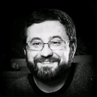

Computer vision and GIS for the navigation of blind persons in buildings
Universal Access in the Information Society, 14, 67–80. Journal issue: March 2015. First published online: 19 February 2014. DOI: 10.1007/s10209-013-0338-8
Publications & academic work

Computer vision & assistive navigation
My research at the University of Algarve’s Vision Laboratory explored how computer vision can support the mobility of blind and visually impaired people, from real-time path and obstacle detection to indoor navigation.
01 / Bibliography
Journal articles, conference papers, a conference abstract and a book. The dissertation is listed under education.
Universal Access in the Information Society, 14, 67–80. Journal issue: March 2015. First published online: 19 February 2014. DOI: 10.1007/s10209-013-0338-8
International Journal of Digital Content Technology and its Applications, 5(5), 362–375. DOI: 10.4156/jdcta.vol5.issue5.40
International Journal of Digital Content Technology and its Applications, 5(5), 351–361. DOI: 10.4156/jdcta.vol5.issue5.39
DSAI 2012 · Procedia Computer Science, 14, 74–82. DOI: 10.1016/j.procs.2012.10.009
Proceedings of the 1st International Conference on Pattern Recognition Applications and Methods (ICPRAM), 515–519. DOI: 10.5220/0003711405150519
Proceedings of the 3rd International Conference on Software Development for Enhancing Accessibility and Fighting Info-exclusion (DSAI), Oxford, 175–182.
Proceedings of the 3rd International Conference on Software Development for Enhancing Accessibility and Fighting Info-exclusion (DSAI), Oxford, 167–174.
European Conference on Visual Perception (ECVP 2012). Perception, 41(1_suppl), p. 99, abstract 97. Supplement DOI: 10.1177/03010066120410s101
LAP LAMBERT Academic Publishing. ISBN 978-3-659-45730-2.
02 / Research
Research fellow developing human-vision models and active-vision algorithms for assistive navigation, using C/C++ and Matlab. Research member of ISR–Lisbon/IST; worked on FCT-funded projects with the University of Algarve and the University of Trás-os-Montes and Alto Douro (UTAD). Contributions included real-time detection of paths, obstacles and lateral doors.
SMARTVISION
Research into a portable navigation aid combining computer vision with geographic information and localisation. The vision work addressed walkable paths and static or moving obstacles beyond the reach of the white cane.
Related publication: local navigation ↗BLAVIGATOR
Visual navigation research covering path following, obstacle detection and indoor landmarks. Work on lateral-door detection and sound feedback connected visual analysis with guidance for blind and visually impaired users.
Related publication: doors & sound ↗Active vision for the blind.
PTDC/EIA/73633/2006
A cheap and reliable navigation aid for the blind.
RIPD/ADA/109690/2009
Robust visual recognition of objects and environments for blind persons.
SFRH/BD/82310/2011
The Amateur Painter.
3.70.13.001
Developed algorithms for text detection, raster-to-vector conversion and automatic interpretation of piping and instrumentation diagrams and AutoCAD files, including pipe and instrument recognition. Worked with the team in The Hague using C# and TypeScript.
03 / Education
University of Algarve
Research into robust visual recognition of objects and environments for blind users: analysis and comparison of existing algorithms, an initial object-recognition model, and hand and arm segmentation. Completed the programme expected for the first two years; studies subsequently suspended, doctorate not completed.
University of Algarve · Degree grade: 16/20
João Tiago Pereira Nunes José
Real-time path and obstacle detection on a small netbook, implemented in C/C++ with OpenCV and a Qt interface.
Supervisor: Prof. Johannes Martinus Hubertina du Buf
Dissertation grade: 18/20
University of Algarve
Selected project: a web content-management system for football news and results, built with HTML, PHP, JavaScript, PostgreSQL and PL/pgSQL. Project grade: 19/20.
University of Algarve
Changed major to Computer Science Engineering; no degree awarded in Electronics Engineering.
04 / Teaching
Cisco Academy, FCT–University of Algarve
Nov 2008 – Jun 2009
Certificate of Pedagogical Competences (CCP)
IEFP · March 2015
Initial trainer training: Training House, Faro · January–March 2015
Cisco Certified Network Associate (CCNA)
Cisco Academy, FCT–University of Algarve
October 2007–May 2008 · Modules 1–4 · Average: 90%
For enquiries about this work and my software engineering experience.